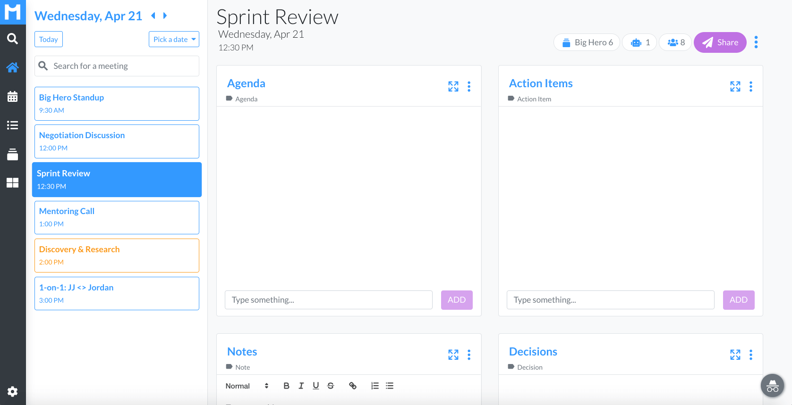
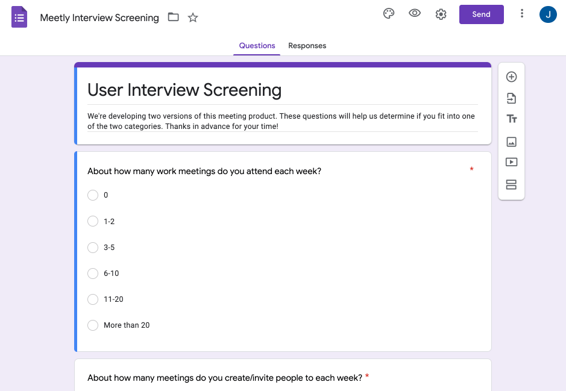
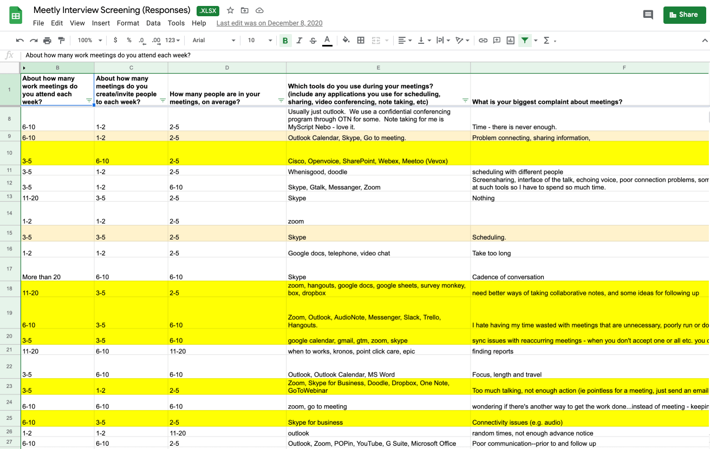
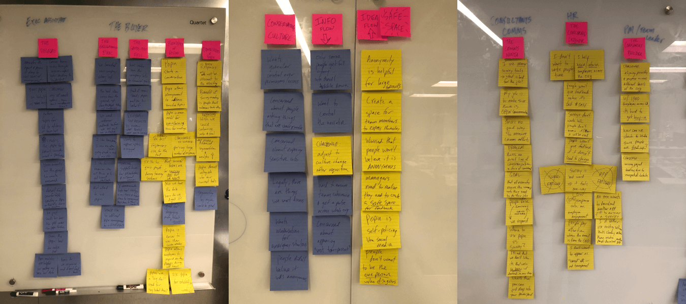
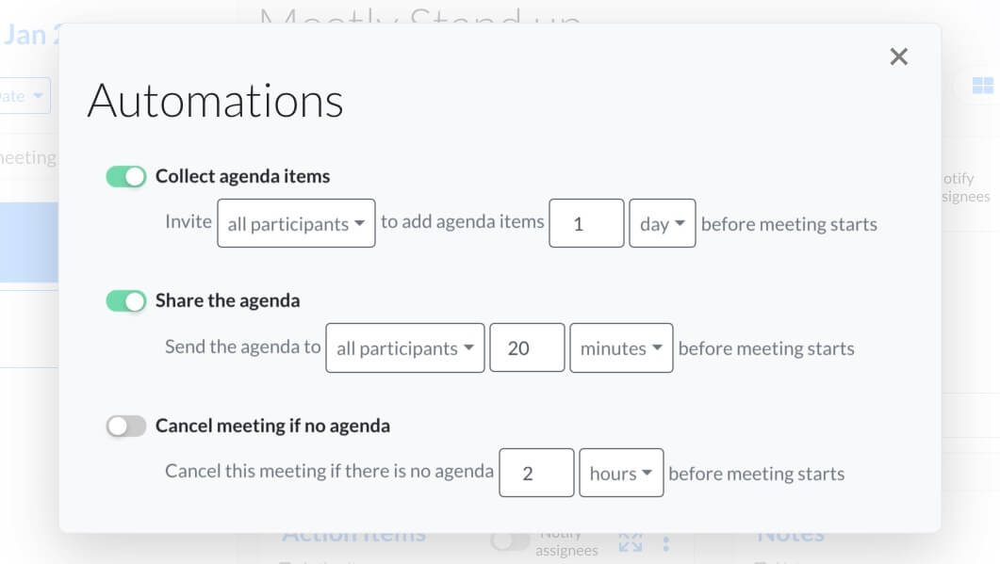
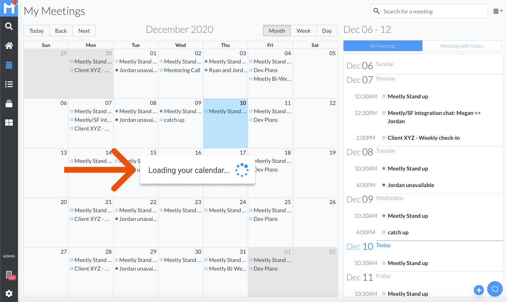

Only designer + research co-lead
Reducing wasteful meetings with an automated calendar-notes tool
my role
Duration
2 years
Company
Meetly, a B2C startup that began as a skunk works project at POPin, an enterprise SaaS company
Background
POPin, a B2B employee engagement tool,
B2B employee survey company was looking to pivot
I joined Meetly after they had raised their first seed round.
The mission: eliminate wasteful meetings
Our approach:
1) make existing meetings more productive
2) eliminate unnecessary meetings.

A screen from Meetly, a meeting notes automation tool I spent 2 years developing
PROBLEMs to solve
Inefficient meetings
No agenda. No time-boxing. No action items. No follow up.
Unnecessary meetings
Recurring meetings are often too frequent.
Other meetings could be replaced with better communication and documentation.
Lack of accountability
Tasks are assigned, but no follow up occurs.
Decisions are made but not documented or disseminated.
Existing solutions too complex or not structured enough
Asana, monday.com and Confluence were too heavy.
Google Docs and Microsoft Word not robust enough.
my role
Design researcher
The greenfield design research I conducted with our PM at the survey company (POPin) is what led to our decision to leave the company and start our own venture.
The only designer
I was responsible for all designs, from initial prototype to final product.
I also coded and conducted final design reviews in the code itself, thereby reducing product development cycle time.
Discovery
Define
Design
Iterate
Targeting users with meeting-specific jobs-to-be-done
Focused efforts on office workers with lots of recurring meetings, project update meetings and cross-team meetings.
This meeting "super user" was our target audience.


Identifying themes and patterns
The insights from these interviews helped us define the problem space (as outlined above).

Discovery
Define
Design
Iterate
how might we...
Improve meeting "hygiene"
It's difficult to require every meeting to have an agenda and action items.
People recognize the importance of agendas and action items, so why don't they always create them?
Increase accountability
Lack of accountability around tasks assigned & decisions made cause wide frustration amongst meeting participants.
Automate best practices
App fatigue is real. The more we can do for them automatically, the less users will feel like they are adopting a new tool.
How can we work in the background, taking care of tasks before users even think about them?
hypotheses to VALIDATE
Consumer product
There is a consumer need for something simpler than project management software, but more structured than text docs and todo lists.
Enterprise product
Companies would purchase and force adoption of a tool that encouraged, tracked, and improved meeting efficiency.
Balancing user needs with investor expectations
Listening to users and observing their behavior were the primary drivers of the product roadmap.
But the reality of needing to court investors heavily influenced some product decisions.
Discovery
Define
Design
Iterate
design principle #1
Be prescriptive, yet flexible
We wanted Meetly to be intuitive as a tool, but also prescriptive (i.e. educational) when it came to good meeting hygiene.
When a user clicks on a meeting, it should be immediately obvious what they need to do – as a meeting organizer and as a participant.
solution
Default notes structure
We automatically included cards for agenda, action items, notes and decisions.
This arrangement encouraged meeting best practices while allowing a user to remove, add or rename cards as needed.
solution
Customizable templates
Users could create custom card arrangements for different meeting types.
design principle #2
More organization, less work
We wanted to leverage energy that users were already putting into their calendars and other productivity tools.
The goal was integration into a user's existing meeting workflow, so that we bring value without additional cognitive load.
solution
Automate meeting management workflow
Our "Automations" feature provide organizational value without requiring the meeting organizer to expend mental energy.

solution
Leverage calendar to organize notes
Meeting notes live on top of a user's calendar events.
Meeting information stays in sync. Cross-linking allows you to find your notes via your calendar.
design principle #3
Make it easy to find and share notes
A common pain point we observed was meeting minutes getting shared via email –– as attachments or links to services that required logging in.
This made it difficult to reference notes later on and contributes to email clutter.
solution
Robust search
The ability to search across all notes and meetings makes it easy to reference past topics.
solution
Meeting groups
Grouping meetings together around a topic, team or project was another way users could organize and quickly reference content.
Discovery
Define
Design
Iterate
Learning from users
Scrappy usability testing
With such a small initial user base and product footprint, we were fine with deploying less-than-perfect features to production.
I would schedule calls with users immediately after deploying a change to production so I could observe them interact with the feature for the very first time.
Observing recorded user sessions daily
Every morning I watched several dozen user-session-replay videos captured via LogRocket.
These low-cost "usability tests" provided instant feedback from real users in a "game situation".
Experimenting with paywalls
Hiding new feature ideas behind paywalls and "Notify me" forms was an inexpensive way of testing how desirable those features were to real users.
Designing around technical constraints
problem
The "full-month view" could cause long load times
Load times lagged considerably if a user had a large number of meetings in a given month.

SOLUTION
"Single-day view" design reduced calendar payload size by 30X
The UX of changing between meeting workspaces was also snappier, as a full day's worth of meeting notes was stored in the browser.
Mistakes made
Solutions in search of a problem
Some of our features proved to be clever solutions to problems people weren't actually willing to pay for to fix.
Confusing a "human problem" for a "technical problem"
Meeting inefficiency is a huge problem, but it's a problem of human psychology. A "solution" is more complex than simply providing better tools.
Chasing enterprise customers
Pursuing enterprise clients early on divided our energies and focus.
We ended up wasting a lot of dev resources on security and privacy, which was less important to our self-serve customers.
Lessons learned
Anecdotes are not proof
They are valuable for inspiring further investigation, but they need to be corroborated with quantitative evidence before giving them weight.
Importance of product vision
User needs should inform product direction (true!) but it's also important to have a vision and stick to it until you have validated that it is (or is not) on target.